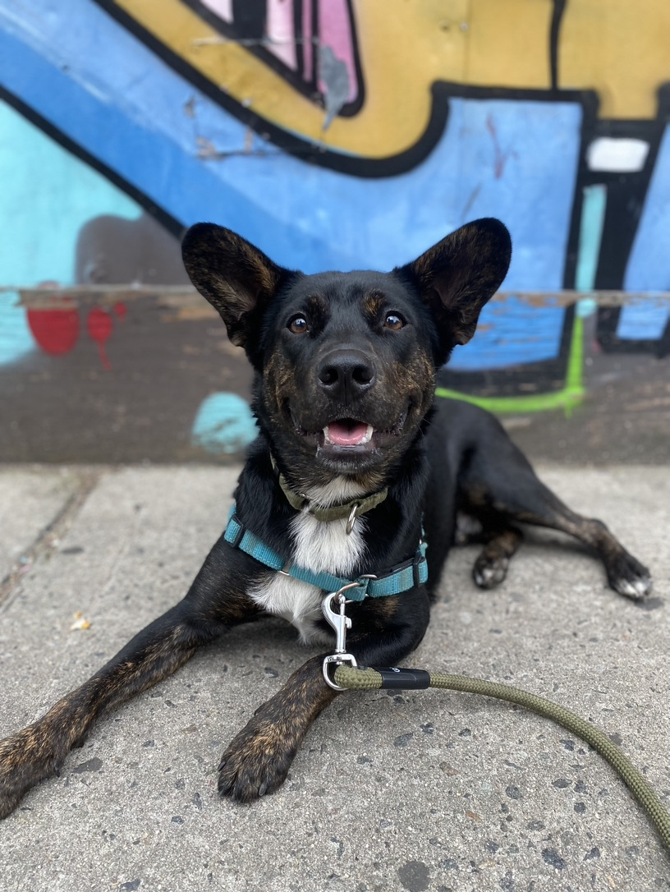 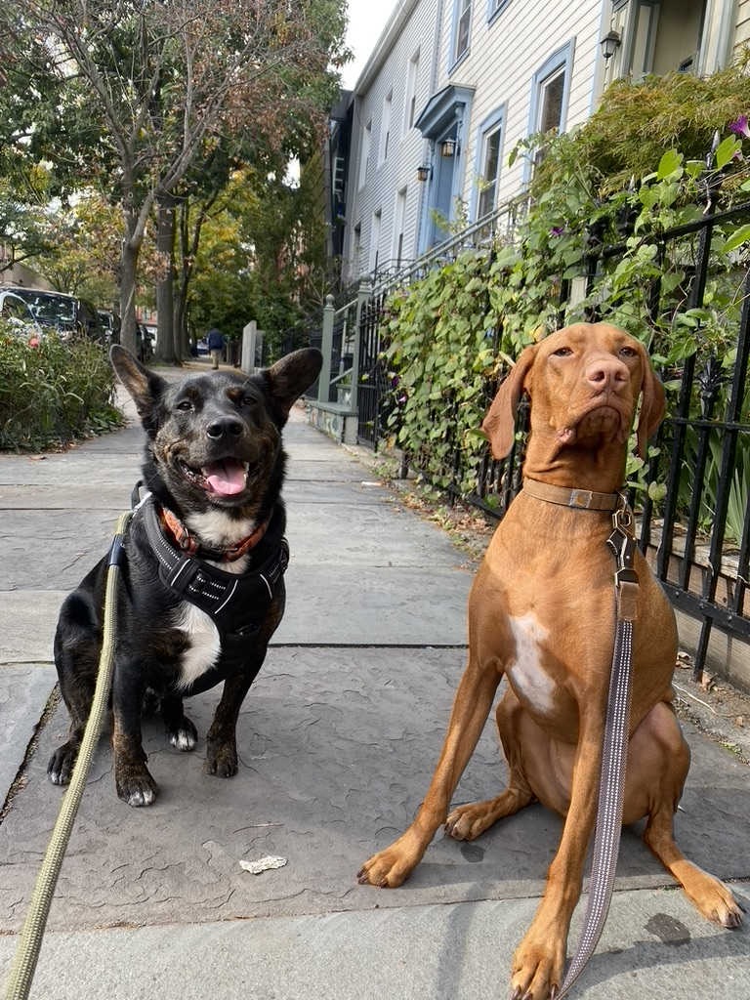
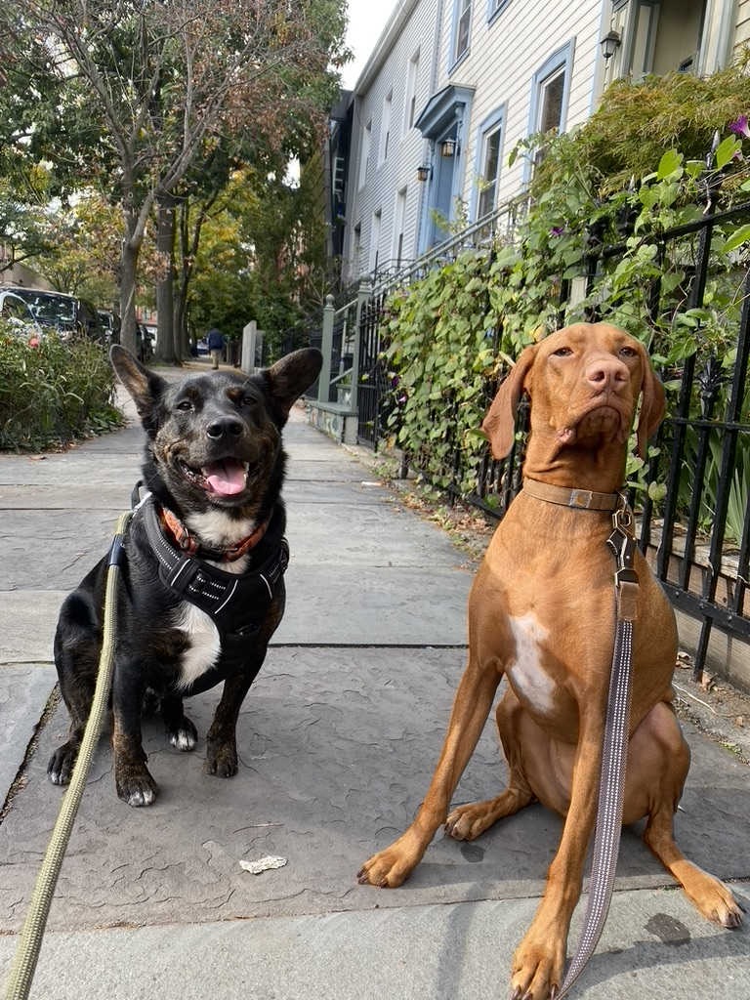
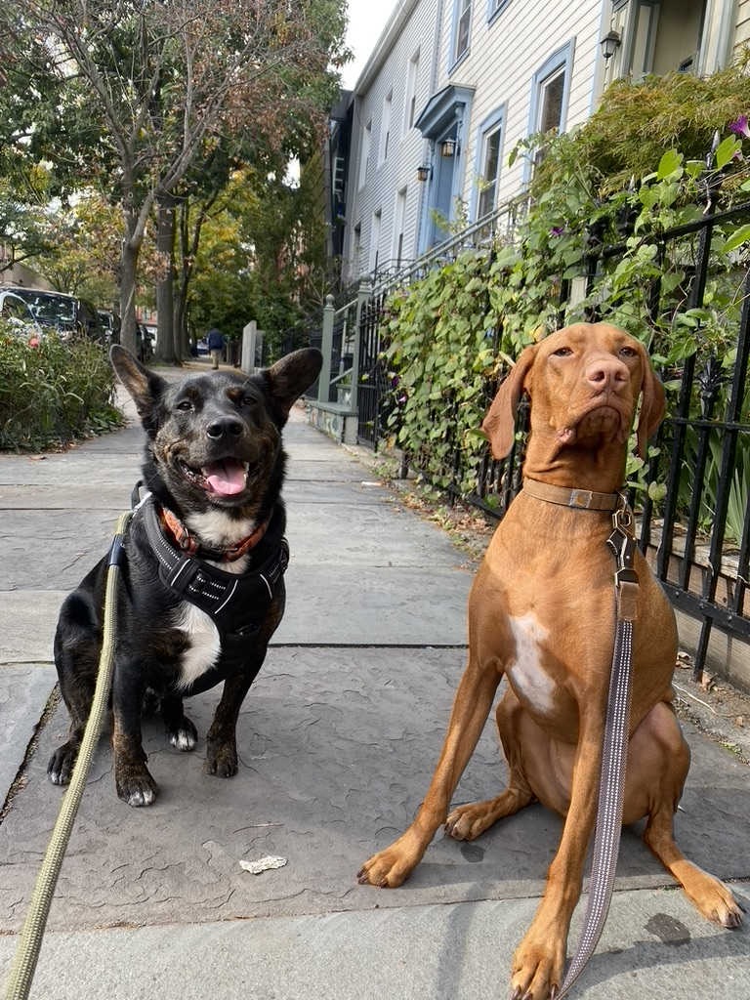
Julie and Ralph
Beau is the absolute best! Like many pet owners, my pup, Ralph, means the world
to
me
and it takes a lot for me
to trust someone. Beau always keeps me updated on the walks and any new friends that Ralph makes. His
daily
recap texts include pictures which I joke is like I hired a professional photographer as an added bonus.
I think
the favorite part of Ralph's day is when Beau arrives, he knows he'll get fresh air, lots of love and a
few
treats.
 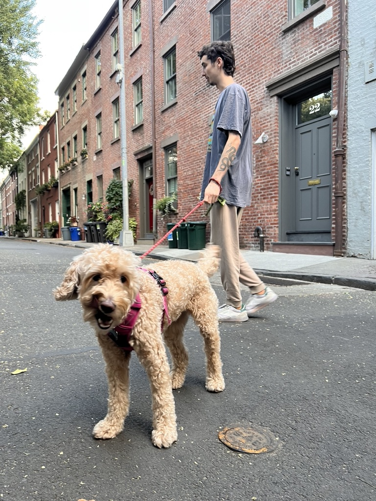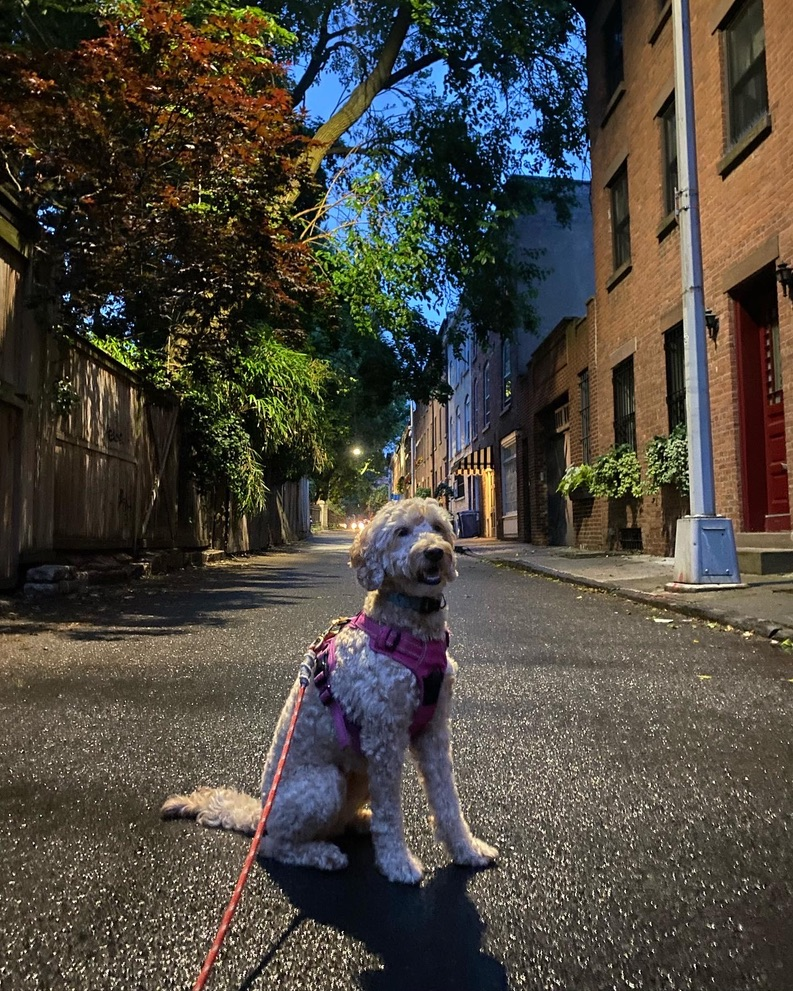
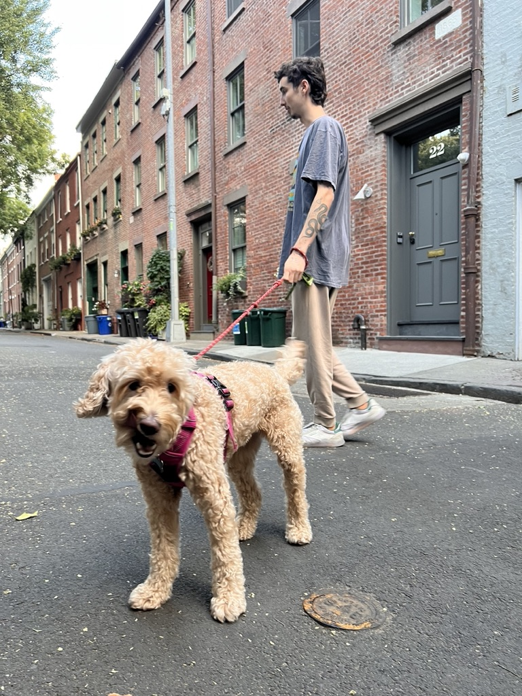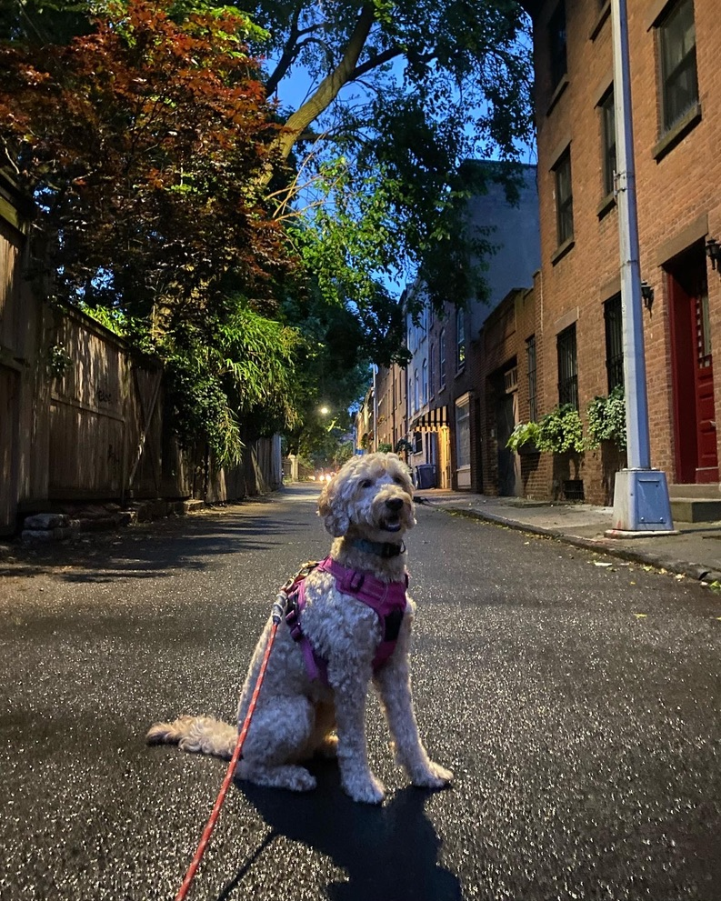
 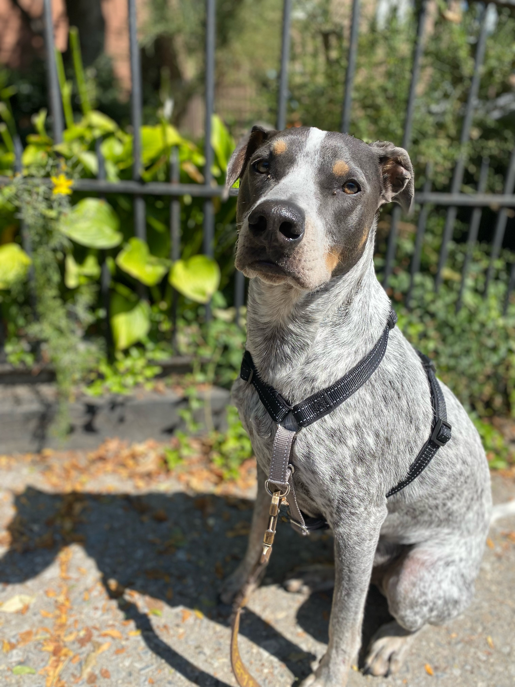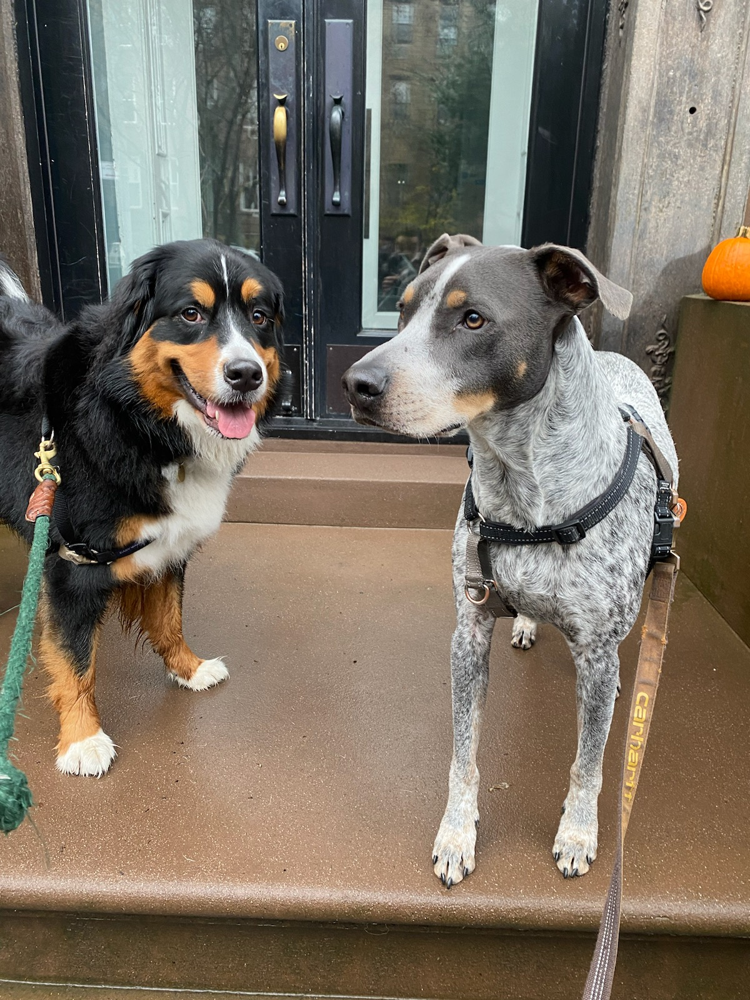
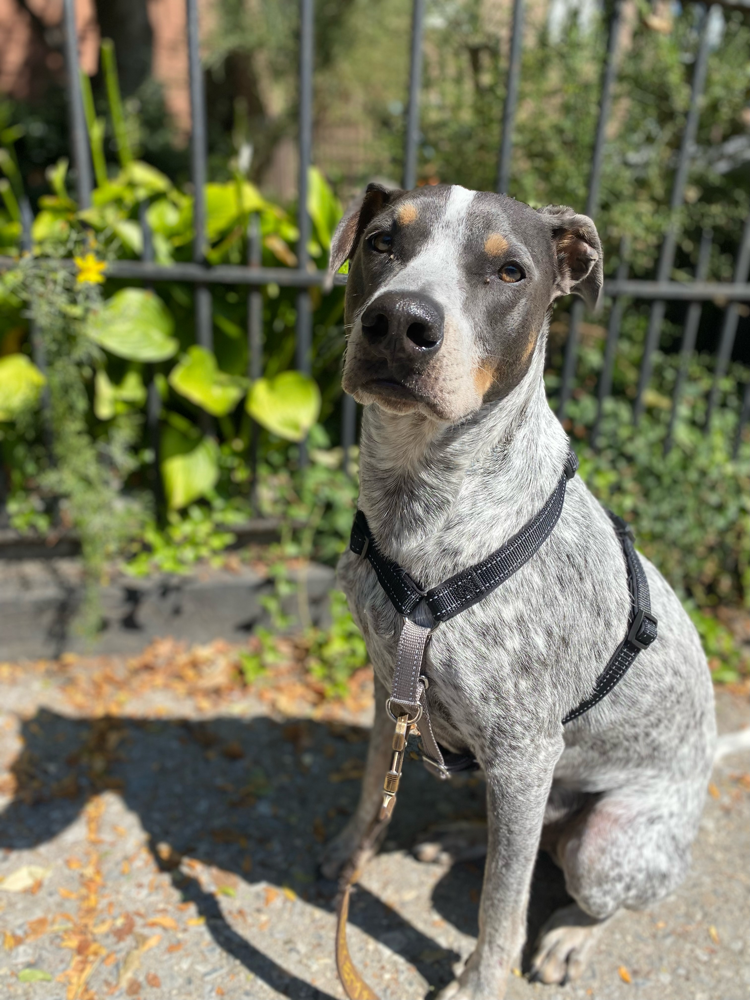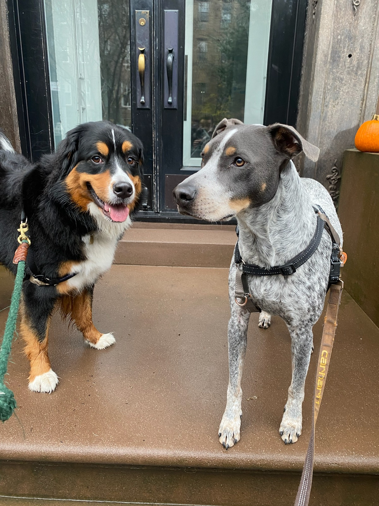